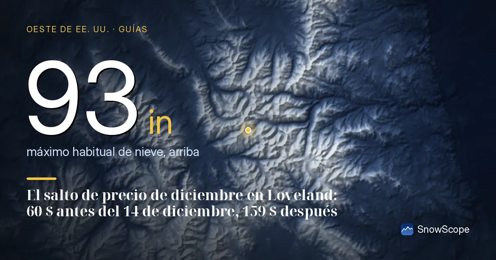

El salto de precio de diciembre en Loveland: 60 $ antes del 14 de diciembre, 159 $ después
Loveland tiene el salto de precio más marcado de todos los tickets de diciembre que hemos revisado: 60 $ online por adelantado hasta el 13 de diciembre, y luego un precio de taquilla de 159 $ desde el 14 de diciembre. La pregunta real para un esquiador de Denver es si principios de diciembre tiene nieve suficiente para que valgan la pena las semanas baratas.
Consulta la previsión de nieve en tiempo real de Loveland Basin Ski Area en la app SnowScopeEspesor de nieve, alertas de nieve polvo y mapa 3D, gratis.
El salto, en un párrafo
Para 2026-27, la temporada temprana de Loveland llega hasta el 13 de diciembre. En ese periodo, un ticket de adulto cuesta 119 $ en taquilla o 60 $ online por adelantado. Desde el 14 de diciembre empieza la temporada regular y el precio de taquilla sube a 159 $, con un número limitado de descuentos online anticipados. La estación también vende un 4-Pak: cuatro forfaits por 299 $.

¿Hay nieve a principios de diciembre?
Normalmente sí, al menos en altura. Loveland es una de las estaciones más altas del país, con remontes de unos 10 890 ft (3318 m) a 12 680 ft (3866 m) en nuestra cartografía, y la nieve duradera llega a media montaña hacia finales de septiembre en un invierno típico.
En un 1 de diciembre típico, a media montaña, unos 11 780 ft (3592 m), hay 20 in (50 cm). El 15 de diciembre hay 29 in (74 cm). La proporción de inviernos con buena nieve allí (una media semanal de 20 in, 50 cm, o más) es del 54 % en la primera semana de diciembre y del 61 % en la segunda, frente al 74 % y el 80 % en las dos semanas siguientes. Así que las semanas baratas son también las menos seguras: normalmente se esquía, pero a menudo sobre una base más fina.

Un diciembre flojo o uno grande
El rango es amplio. Un diciembre flojo (uno de cada diez inviernos) tuvo 11 in (27 cm) a media montaña el día 15; uno grande, 50 in (128 cm). En el 89 % de los inviernos hubo al menos 10 in (25 cm) en esa fecha, lo que en una montaña alta y herbosa de la Continental Divide basta para pistas preparadas.
La temporada temprana se ha adelgazado un poco. El espesor típico del 15 de diciembre a media montaña fue de 32 in (81 cm) en los primeros 15 inviernos de nuestro registro y de 23 in (58 cm) en los últimos 15.
Loveland, Ski Cooper, Wolf Creek y Vail
Ski Cooper, cerca de Leadville, cobra 49 $ entre semana y 99 $ en fin de semana y festivos, con 26 in (66 cm) a media montaña en un 15 de diciembre típico. Wolf Creek cobra 96 $ en días normales y 110 $ en días punta, con 34 in (87 cm). Vail, el gran nombre más abajo en la I-70, tenía 24 in (62 cm) a media montaña en un 15 de diciembre típico según nuestros datos; no comparamos sus precios.
Loveland también forma parte del Indy Pass: el Indy Base Pass cuesta 419 $ y el Indy+ Pass 469 $, cada uno con dos días en cada estación asociada.
Quién debería ir pronto, quién debería esperar
Si esquías en pistas preparadas y vives en el Front Range, los días online a 60 $ antes del 14 de diciembre son la mejor oferta de diciembre de esta lista, y la nieve de un principio de diciembre típico basta para aprovecharla. Si quieres toda la montaña abierta, espera a la segunda mitad del mes y mira el 4-Pak o un pase de temporada en lugar del precio de taquilla de 159 $.
Consejos para esquiadores
- Compra online, con antelación, para cualquier fecha hasta el 13 de diciembre: el precio de taquilla es casi el doble.
- Desde el 14 de diciembre, el 4-Pak a 299 $ supera con creces a cuatro tickets de taquilla.
- La I-70 y la zona del túnel Eisenhower sufren cierres invernales: consulta el CDOT y sal con tiempo.
- A 12 000 ft el viento muerde: lleva un cubrecaras y calienta manos.
Referencias y créditos
- Loveland Ski Area, lift tickets 2026-27 (official) skiloveland.com/lift-tickets/
- Indy Pass, shop 2026-27 (official) www.indyskipass.com/shop
- Ski Cooper, day pass 2026-27 (official) www.skicooper.com/cooper-day-pass/
- Wolf Creek Ski Area, tickets and passes 2026-2027 (official) wolfcreekski.com/tickets-passes/
- OpenSkiMap (mapped lifts and runs) openskimap.org/
- avalanche.org, US avalanche centers and forecasts avalanche.org/
Sobre estas cifras
Cifras de nieve: histórico de nieve de SnowScope, 46 inviernos pasados (1980-81 a 2025-26) en las alturas indicadas (base, media, cima), una reconstrucción de la nieve pasada para una zona corregida por altitud (basada en ERA5-Land; Snow_Hydro 1 km para Marruecos), no los partes de la estación. Nieve actual: el mapa de SnowScope. Remontes, pistas y alturas: cartografía OpenSkiMap. Precios: las páginas oficiales listadas abajo, consultadas el 13 de noviembre de 2026; los precios dinámicos cambian con la fecha y la demanda.
Boletines oficiales de aludes: Colorado Avalanche Information Center
Citar este informe
Para investigación, docencia o prensa: cifras y gráficos reutilizables libremente bajo CC BY 4.0 con esta cita.
SnowScope (2026), El salto de precio de diciembre en Loveland: 60 $ antes del 14 de diciembre, 159 $ después, https://snowscope.app/blog/es/2026/11/loveland-ski-area-december-deal-2026.html, consultado el 2026-11-14
SnowScope (Atlas Labs). (2026, November 14). El salto de precio de diciembre en Loveland: 60 $ antes del 14 de diciembre, 159 $ después. SnowScope snow reports. https://snowscope.app/blog/es/2026/11/loveland-ski-area-december-deal-2026.html
BibTeX
@misc{snowscope2026lovelandskiareadecemberd,
author = {{SnowScope (Atlas Labs)}},
title = {El salto de precio de diciembre en Loveland: 60 $ antes del 14 de diciembre, 159 $ después},
year = {2026},
month = nov,
howpublished = {\url{https://snowscope.app/blog/es/2026/11/loveland-ski-area-december-deal-2026.html}},
note = {Published 2026-11-14 17:47 UTC; accessed 2026-11-14}
}· CC BY 4.0 · Métodos, datos y herramientas →
Sigue Loveland Basin Ski Area
Gratis: un aviso cuando llega la nieve y la previsión cada mañana.